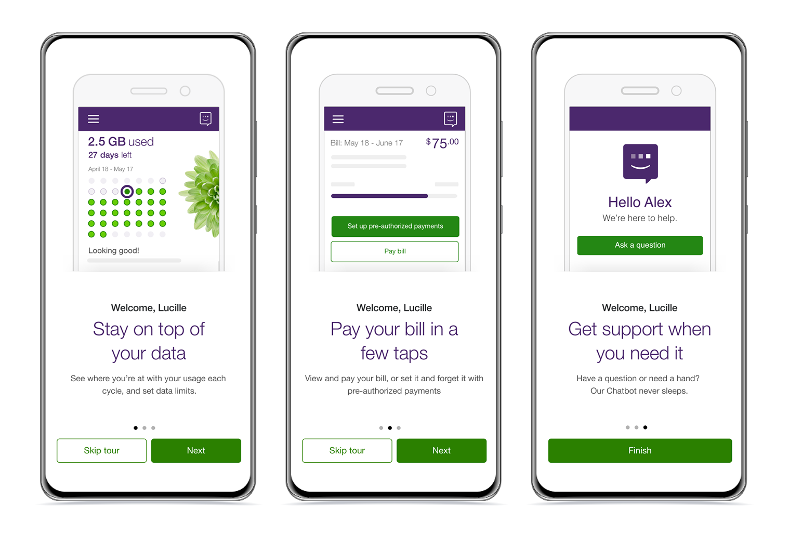
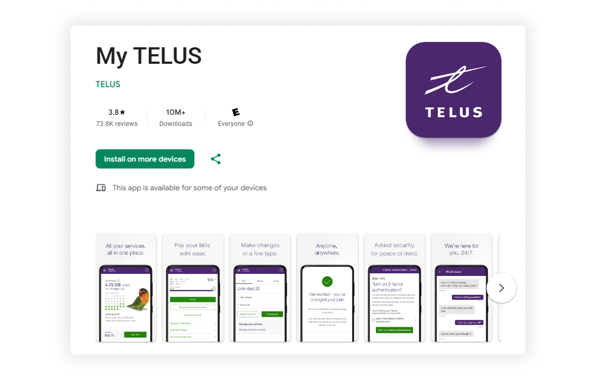
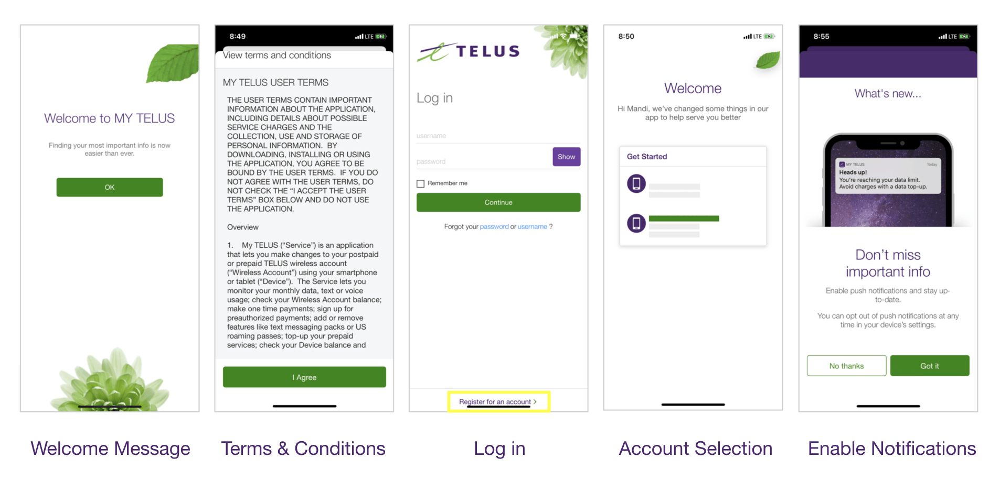

Increasing the My TELUS App Retention from 40.6% to 62.6%
I redesigned the onboarding experience for the My TELUS App to educate customers on self-serve capabilities and reduce call centre dependency. By introducing benefit-oriented animations highlighting high-impact features, I increased Android 1-month retention from 40.6% to 62.6% and grew High-Value Self-Service Activity (HVSSA) from 1.9% to 3.7% within the first month.

Context
Empowering Self-Service within The My TELUS App
The My TELUS App is the primary hub for customers to manage their accounts. Whether tracking data usage or paying bills, the goal was to empower users to handle tasks independently, shifting reliance away from support channels and toward self-service.

Problem
High Call Volumes and Service Abandonment
The My TELUS services (web & app) were seeing a significant drop-off in engagement, with only 40% of users returning to manage their accounts after the first 90 days. This lack of retention contributed to 1.5 million calls within that same window.
While these issues spanned all of the My TELUS services, this presented an opportunity to use the mobile app as a driver for digital adoption. By redesigning the onboarding to lead with the app's value, we could proactively increase user retention and shift behaviour toward self-service, reducing the overall need for call centre support.
Research
Analyzing Call Drivers to Identify High-Impact Features
To understand the landscape of customer frustration, I analyzed the top reasons users were calling support. This allowed us to pinpoint exactly which app features would provide the most immediate relief to both the customer and the business.
Top Call Drivers
Data Usage Inquiries
Onboarding / Account Setup
Billing Inquiries
Education Bridges the Awareness Gap
The data showed that customers weren't avoiding the My TELUS App. They just didn't know it could solve these specific problems. I realized that by educating users in the first few seconds, we could shift their behaviour from calling support to using the self-serve tools already in the app.
The Existing Onboarding Experience
The original flow focused on administrative hurdles rather than value. Users had to navigate generic welcomes, dense legal text, and immediate permission prompts before reaching the dashboard. This created a barrier to entry that failed to show what the app could actually do, missing the chance to give users a reason to return.

Solution
Reducing Friction and Leading with Value
I optimized the onboarding flow by removing unnecessary friction. I eliminated the generic welcome screen and deferred permission requests like notifications until later in the journey. This created space to introduce animated benefit cards before the user landed on the homepage.
This streamlined approach focused on:
Visual Storytelling
Showing where features live in the interface rather than just describing them.
Purposeful Motion
Using animation to guide attention to key actions, reducing the cognitive load of learning the UI.
Immediate Utility
Prioritizing Data, Billing, and Support to demonstrate the app's value within the first few seconds.
Impact
Increased Android Retention from 40.6% to 62.6%
Streamlining the flow and focusing on education led to a sustained improvement in how users stayed engaged. The data shows that users who experienced the new onboarding were significantly more likely to return and perform high-value self-service activities (HVSSA) compared to those who did not.
Retention · 1 Month
Android
40.6% → 62.6%
+22 ptsiOS
53.3% → 64.4%
+11.1 ptsSelf-Service Activity · 1 Month
Android
1.9% → 3.7%
+1.8 ptsiOS
4.6% → 6.6%
+2 ptsThe results remained consistent over a 3-month period, proving that when we proactively show users how to solve their problems in-app, they are significantly more likely to choose self-service over calling support.
Retention Over 3 Months In-App
Percentage of users in each cohort coming back within 1-3 months of launching the app for the first time.
HVSSA Over 3 Months In-App
Percentage of users in each cohort coming back to perform High-Valued Self-Service Activities (Example: paying their bill) within 1-3 months of launching the app for the first time.
Reflection
Education Drives Adoption
This project reinforced that onboarding isn't just about showing features. It's about demonstrating value quickly. Customers needed to understand what the app could do for them before they'd invest time exploring it.
The success of this project influenced how I approach onboarding in future products: focus on benefits over features, use motion purposefully to guide attention, and keep content concise to maintain engagement during those critical first interactions.